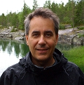
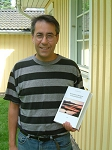
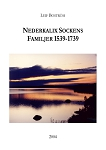
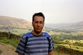
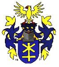

Leif Arne Boström
Tekn. Lic., Släkt- och bygdeforskare, författare.
| Född: | 1961-12-22 Matteus fs, Stockholms stad. [1] |
|---|
| Levde: | 1971 Enebyberg, Täby fs, Täby kn. [1] |
|---|
| Vigsel: | 1990-04-14. [2] |
|---|
| Levde: | 1991 Tråsättra 1:844, Otto Bondes v 120, Åkersberga, Österåkers fs, Österåkers kn. [2] |
|---|
| Barn: |
|---|
| Annika Boström (1992 - ) |
| Gabriel Boström (1994 - ) |
| Jonatan Boström (1996 - ) |
Noteringar
Meritförteckning
för Leif Boström, Täby
familjenbostrom.se/leif/cv.htm
Boström, Leif Arne
Född 1961-12-22
Gift sedan 1990 med Veronica.
Pappa till tre barn: Annika, född 1992, Gabriel, född 1994 och Jonatan, född 1996.
Inledning
Jag har arbetat inom elnätsverksamhet sedan 1990, från 2001 till 2008 med ledaransvar. Det jag kan bäst inom elnätsverksamheten är reglering, prissättning och villkor. Jag har även erfarenhet av övrig elnätsverksamhet.
Som person är jag välstrukturerad och ser till att uppgifter slutförs. Jag har lätt för att uttrycka mig i skrift och tal samt har mycket god analytisk, administrativ och pedagogisk förmåga. Att leda och ansvara för personal tycker jag om. Min ledarstil är inte auktoritär, men ändå tydlig. I arbetslivet har jag tre ledord:
klippa – jag står för vad jag säger och man kan lita på mig
människa – jag har omsorg och omtanke om människan, både medarbetaren och kunden
örn – jag har förmåga både till överblick och att se detaljer.
På fritiden umgås jag med min familj, är kassör i en frikyrkoförsamling och släktforskar. Jag har skrivit en omfattande bok med släktforskningsuppgifter från en norrbottnisk socken, som jag gav ut på eget förlag och sålde själv.
Anställningar
Ellevio AB
Regleringsanalytiker, Regulation, Stockholm. Från 2008-05-01. (Fortum Distribution AB före 2015-06-01.)
Gruppen ansvarar för hantering av Energimarknadsinspektionens ekonomiska reglering av Fortum som nätbolag.
E.ON Elnät Sverige AB
Tf chef, avdelning Produkter, enhet Marknad, Upplands Väsby. 2007-07-01-2008-04-30.
Stf chef, avdelning Reglering och priser, enhet Marknad, Upplands Väsby. 2006-07-01-2007-06-30.
Delprocessledare Affärsutveckling, Upplands Väsby. 2004-04-01—2006-06-30 (Sydkraft Nät AB före 2005-09-16).
Avdelning Produkter ansvarar främst för nätavgifter och villkor. Avdelning Reglering och priser ansvarade även för hantering av Energimarknadsinspektionens reglering av E.ON som nätbolag. Inom Affärsutveckling ansvarade jag för tre aktiviteter: nätavgifter och villkor, de stora kunderna samt leverantörsbyten. Jag ingick också i Marknads ledningsgrupp.
Graninge Nät AB
Utvecklingschef, Danderyd. 2001-01-01—2004-04-01 (Upplands Väsby från 2003-10-01).
Utredningsingenjör, Danderyd. 1996-04-01—2000-12-31.
Jag var med i Näts ledningsgrupp och hade då inblick i alla frågor som rörde elnätsverksamheten. Mitt eget ansvar omfattade prissättning, villkor, kundservice, miljö och kvalitet samt forskning och utveckling. Jag deltog i många projekt både inom företaget och i branschen, ofta som projektledare. Som chef ansvarade jag för en grupp med avancerade utredare. Som utredningsingenjör utförde jag samma uppgifter som jag sedan ansvarade för som utvecklingschef.
Svenska kraftnät
Utredningsingenjör, enhet Planering, Vällingby. 1992-01-01—1996-03-31.
Jag utförde tekniska och ekonomiska nätutredningar samt nätberäkningar.
Vattenfall Transmission
Utredningsingenjör, Vällingby. 1990-09-03—1991-12-31.
Mina arbetsuppgifter var desamma, som senare på Svenska kraftnät. Den del av Vattenfall jag tillhörde ombildades till Svenska kraftnät 1992-01-01.
Kungliga Tekniska Högskolan
Forskarutbildning, institutionen för hållfasthetslära, Stockholm. 1985-05-01—1990-06-30.
Jag utförde teoretiskt och praktiskt forskningsarbete inom utmattningshållfasthet samt undervisade i grundkurser i hållfasthetslära.
Övrigt
Examensarbete, Atlas Copco MCT AB, Nacka. 1984-05-28—1984-08-10.
Praktikant, Programma Electric AB, Täby. 1980-06-09—1980-08-08, 1981-06-01—1981-07-03.
Brevbärarbiträde, Postkontoret Täby. 1977-05-16—1986-11-01 deltid.
Teoretisk utbildning
Teknologie licentiat, hållfasthetslära, Kungliga Tekniska Högskolan, Stockholm 1990
Civilingenjör, Teknisk Fysik, Kungliga Tekniska Högskolan, Stockholm 1985
Grundkurs företagsekonomi (20 p), Stockholms Universitet, Stockholm 1983
Naturvetenskaplig linje, Norra Reals gymnasium, Stockholm 1980
Vetenskapliga publikationer
Initiation of Short Fatigue Cracks. Licentiate Thesis No. 44. Dept of Solid Mechanics, Royal Institute of Technology, Stockholm (April 1990).
Short Fatigue Cracks at Sharp Notches in a Carbon Steel. Dept of Solid Mechanics, Royal Institute of Technology, Stockholm (1990).
Experiments on Steel Specimens with the Intention to Study Growth of Short Fatigue Cracks. The International Journal of Pressure Vessels and Piping 42, 121-128 (1990).
The Dugdale Model Used for Short Radial Cracks Emanating from a Circular Hole in an Infinite Sheet. Engineering Fracture Mechanics 34, 823-829 (1989).
Språk
Svenska, modersmål.
Engelska, bra.
Tyska, läst i fem år, men inte använt sedan skoltiden.
Övrigt
Skrivit och gett ut boken: Nederkalix sockens familjer 1539-1739, 2004
Kassör i Grindtorpskyrkan i Täby. Från 1988
Vapenfri tjänstgöring som brandman på Bromma flygplats. 1982-03-01—1983-02-10
familjenbostrom.se
Leif Boström 2006-08-28. Senast uppdaterad 2018-07-16.
_____________________________________________
Bakgrund
När jag var tolv år väckte min mormor mitt intresse för släktforskning. Jag fick en liten släktutredning, som jag under 1970-talet kompletterade genom att fråga släktingar och med hjälp av publicerat material. I gymnasiet gjorde jag ett specialarbete om mina förfäder. Då tittade jag för första gången i originalkällor på rullmikrofilm. När jag hade möjlighet satt jag på biblioteket och forskade. Jag besökte också i början av 1980-talet för första gången arkiven: Krigsarkivet, Riksarkivet och Landsarkivet i Härnösand. Där fick jag studera de riktiga originalhandlingarna. Resten av 1980-talet ägnade jag mest åt att försöka finna alla ättlingar till Fredrik Persson Bomb, soldat i Boden, född 1777 och anfader till min Boström-släkt. I början av 1990-talet utforskade jag min frus antavlor. När jag märkte att jag snabbt kom längre bak i tiden än jag gjort i mina egna antavlor började jag komplettera dem. Tidigare hade jag nästan enbart använt kyrkböcker som originalkällor. Nu började jag även använda andra källor, som t ex skattelängder, domböcker och roteringslängder. Det är ett mycket intressant detektivarbete att leta efter föräldrar till personer där det inte direkt av kyrkböckerna framgår vilka de är. Men det kan ta lång tid om man någonsin finner dem.
Jag började kring 1990 att mata in mina uppgifter i ett släktforskningsprogram (Disgen) på dator. Jag skrev av mina för hand gjorda sammanställningar, som saknade källhänvisningar. Jag har ännu inte kompletterat med källhänvisningar till särskilt många av de drygt 60 000 individer, som jag hittills hunnit mata in i databasen. Naturligtvis har jag någon form av källa till alla mina uppgifter. Men det kan ta tid att leta reda på källorna i mina över trettio tjocka pärmar med släktforskningsuppgifter.
Vid sidan av att komplettera an- och släkttavlor har jag kartlagt alla gårdar och bönder med familjer som verkat i Nederkalix socken under perioden 1539-1739. Jag har i slutet av 2004 gett ut en bok om Nederkalix sockens familjer under den tidsperioden. Min Nederkalixsammanställning innehåller omkring 10 000 individer.
De församlingar jag forskat inom är främst Nederkalix och Luleå socknar under 1500- och 1600-talen, men även efter den perioden. Jag har även forskat inom resten av Norrbottens kustland, Västerbotten, södra Lappland, norra Ångermanland, södra Jämtland, Hälsingland, Uppland, Västergötland, norra Östergötland, sydöstra Närke, norra Dalarna och Finland.
Jag har inte särskilt mycket tid att ägna åt hemsidan, varför den inte kommer att uppdateras särskilt ofta.
familjenbostrom.se
Personhistoria
| Årtal | Ålder | Händelse |
|---|
| 1961 |
|
Födelse 1961-12-22 Matteus fs, Stockholms stad [1] |
| 1964 |
2 år |
Systern Eva Kristina Boström föds 1964-01-28 Matteus fs, Stockholms stad [1] |
| 1964 |
2 år |
Makan Karin Veronica Gelland föds 1964-09-30 Huddinge fs, Huddinge kn (AB) [3] |
| 1971 |
|
Levde 1971 Enebyberg, Täby fs, Täby kn [1] |
| 1990 |
28 år |
Vigsel Karin Veronica Gelland 1990-04-14 [2] |
| 1991 |
|
Levde Karin Veronica Gelland 1991 Tråsättra 1:844, Otto Bondes v 120, Åkersberga, Österåkers fs, Österåkers kn [2] |
| 1992 |
|
Dottern Annika Boström föds 1992 |
| 1994 |
|
Sonen Gabriel Boström föds 1994 |
| 1996 |
|
Sonen Jonatan Boström föds 1996 |
| 2016 |
54 år |
Fadern Sune Evald Boström dör 2016-11-27 Stralsundsvägen 13, 18741 Täby, Täby fs, Täby kn [4] |
Dokument
Källor
| [1] | Mtl Stockholms stad och län 1971 |
| |
| | |
| [2] | Mantalslängd 1991, Stockholms län |
| |
| | |
| [3] | Mtl Sveriges befolkning 1971 |
| |
| | |
| [4] | FK 16, man91, SDB7_04941432 |
| |
|
 |
2013. Leif arbetar på Fortum Distribution i Värtahamnen i Stockholm, där han analyserar den ekonomiska regleringen av elnätsföretag.
I somras cyklade han oftast de 17 kilometerna till jobbet. Han fortsätter med släktforskningen och som kassör i Grindtorpskyrkan i Täby. Mycket tid ägnas vid datorn. På sin 50-årsdag 2011-12-22 fick han en engelsk studiebibel som han under året har läst i regelbundet. Han har också hunnit njuta av flera andra böcker.
|
| |
|  |
| 2006 |
| |
|  |
| Leif Boström med boken om Nederkalix. |
| |
|  |
| 2005 |
| |
|  |
| 2006. Leif Boström |
| |
|  |
| Boströms släktvapen |
|

{kind=link}
{kind=link}
{kind=link}
{kind=link}
{kind=link}